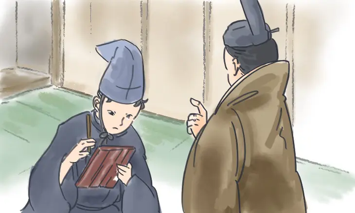

※本サイトにはプロモーションが含まれています。
ちょこっと雑談
2024.07.20
2024.07.20
クライアントは100番、ディレクターは97番。百人一首は内輪でできている

百人一首ができた時のこそっとウワサ話
現在放送されている大河ドラマ「光る君へ」。平安時代の紫式部を主人公に描かれており、作中には恋の歌も数多く登場します。
エントリーナンバー57番の紫式部には娘がいて、次に控えています。ちなみに紫式部は偉い人に使える宮廷の女性会社員（女官という）であり、職場の同僚の女官とその娘さんもラインナップに加わっています。
ライバルと言われる清少納言も5番後にエントリーされていますが、実はおじいちゃん、お父さんとも一緒に親子3代でノミネートされています。
そして極め付けは、この小倉百人一首を作ったディレクターも、作るように命じたクライアントもそれぞれこの歌手の中に存在しています。クライアントを入れるのはもしかしたら大人の事情なのかもしれませんが、自分自身も選んでいるなんて、ちょっと図々しいですよね。
このように、親子つながり、上司と部下、同僚など職場の繋がりがある人同士など、かなり内輪で繰り広げられている作品が百人一首となっています。歌人マップを参考に、誰とどんな関係があったのか、気軽に覗いてみてください。